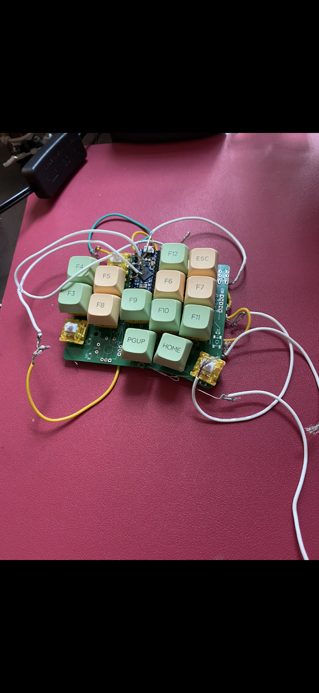
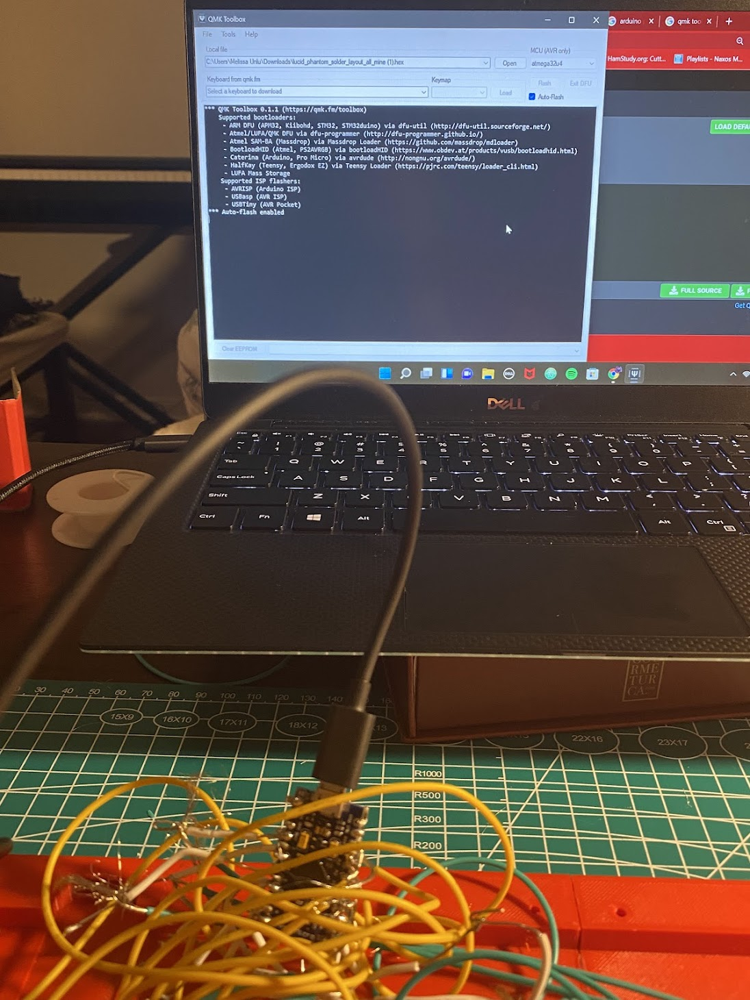
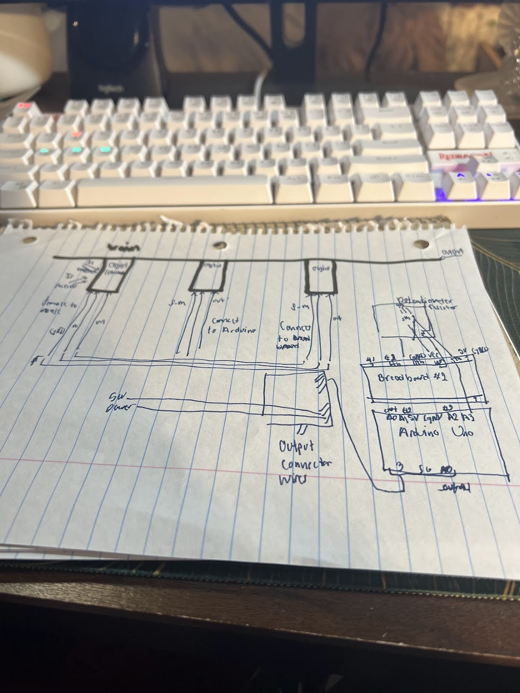
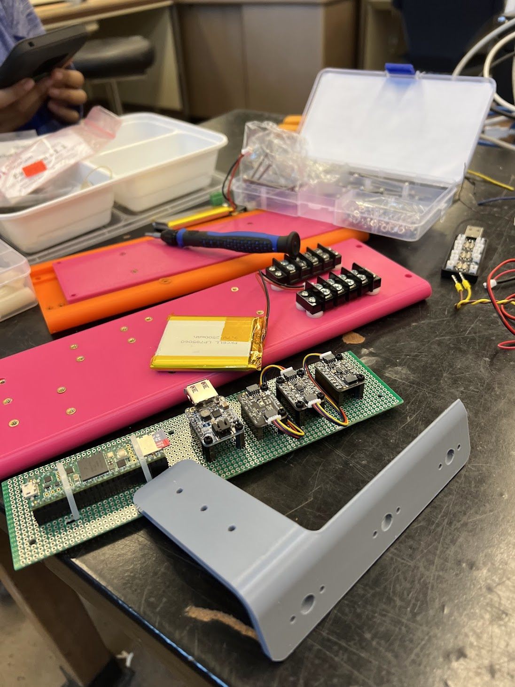
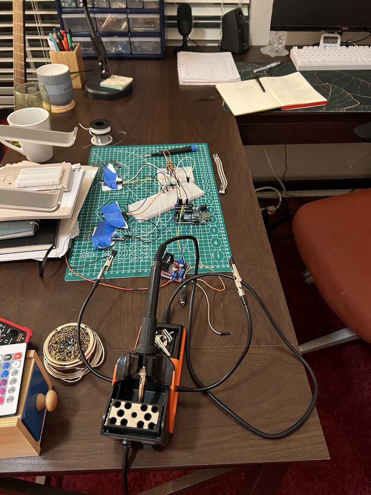
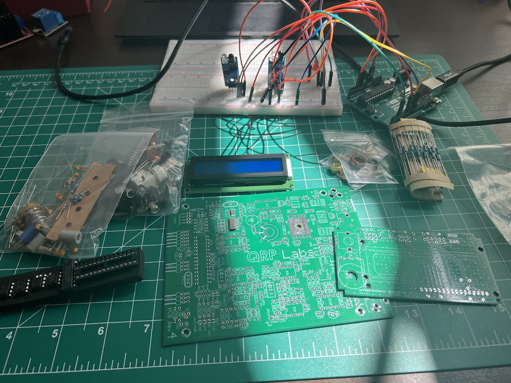
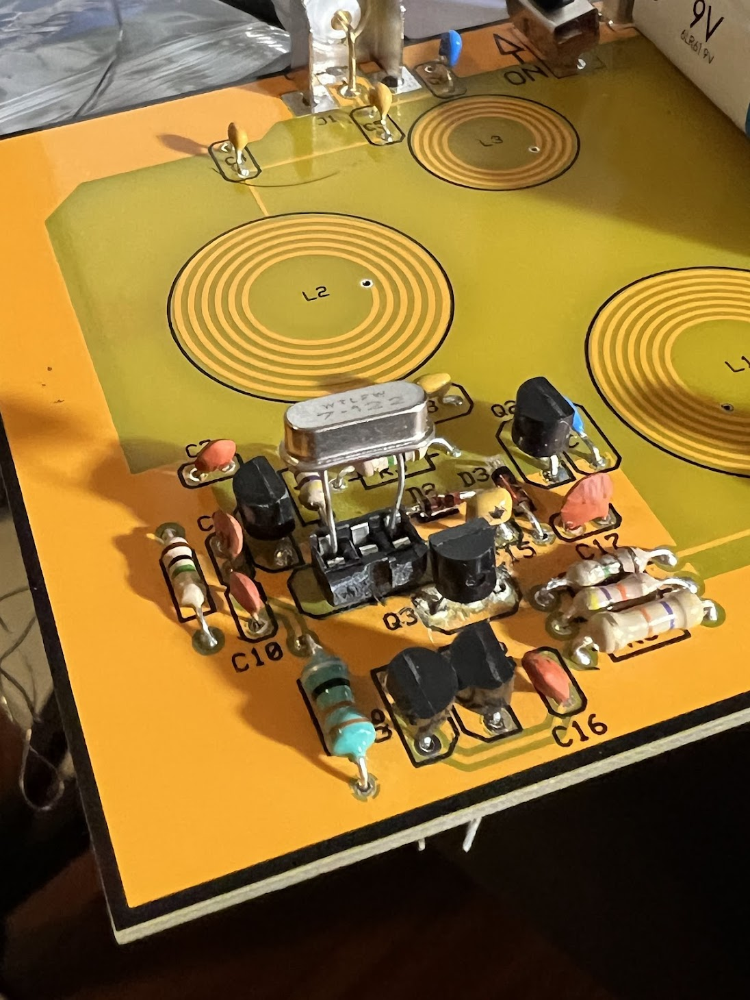
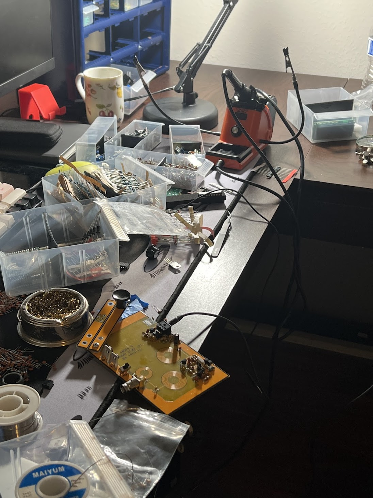
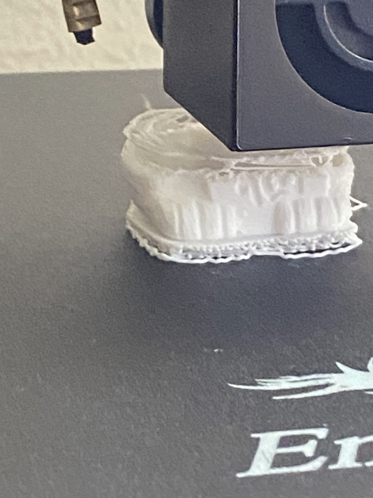

Electronics & Embedded Projects
7 buildsCustom Mechanical Macro Keyboard
Hand-wired macro keypad with a soldered switch matrix on an ATmega32u4, flashed with custom QMK firmware for a 12-key function/navigation layout.


Arduino Prototyping
Breadboard prototypes spanning sensor input, LED output, and L298N motor driver control, with custom C/C++ firmware for real-time sensor-triggered logic.
.png)
.jpg)
.jpg)
.jpg)
.jpg)

Rocketry & Avionics
Designed rocket nosecone/fin geometry in CAD, soldered compact flight-computer PCBs with GPS, and analyzed real flight telemetry data post-launch.
.jpg)
.jpg)
.jpg)
.png)
.jpg)
.jpg)
.png)
.jpg)

Raspberry Pi Telemetry & Display Rig
Integrated a Raspberry Pi with an LCD display and RF antenna module alongside a breadboard sensor array for a multi-device telemetry setup.

QRP Labs RF Radio Kit Build
Assembled and soldered a multi-board RF kit involving crystal oscillators, precision resistor networks, and an LCD readout for signal generation.

Wireless Power Transfer System
Engineered a custom PCB with a 3-coil planar inductive array, crystal-driven oscillator, and transistor amplification for contactless power transfer.


3D-Printed Enclosure Design
Modeled and 3D-printed a custom enclosure to house electronics, iterating on print settings and mounting geometry to fit PCB and connector layouts.
